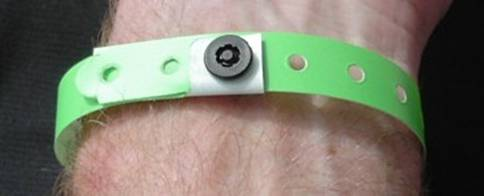

Navlight Instructions
The navlight scoring system will be used. Each team will be issued with two tags which must be fitted using the supplied wrist-band to two team members. For a mixed team one member of each sex must wear a tag. Each of these team members must record their visit at each punch. The last to register is the allocated time.
 A Punch
A Punch Punch registering in a Tag
Punch registering in a Tag
The NavLight system has two main components; the Punches and the Tags. The Punches are powered by one AA battery and hang from a cord at each checkpoint. The Tags are un-powered and are worn on the wrist by the competitors. They are attached with a security band.
When you visit a checkpoint you record your visit by inserting the Punch into the Tag; a process which typically takes half a second. A red light flashes regularly to indicate that your visit has been recorded.
Apart from the Checkpoint Punches, there are some special-purpose punches which you MUST be aware of. They look the same as normal Punches but have been allocated a special Status.
- Use a BRIEF Punch before the event start.
- Use a FINISH Punch whenever you return to the Administration area.
- Use a DEPART Punch if you have returned and go out again.
After you have used the FINISH Punch at the end of the event an organizer will remove your tag from your wrist (do not remove it yourself) and it will be scored. Wait for your printout which will look something like this: (Start time was 6:40:00 PM.)
Team No. 62 Tag ID = ACBA Tags=0017
Line # PunchID Value Time Punched Split Time.
1 66 21/12/2005 6:35:41 PM BRIEFING. Score reset.
2 26 20 21/12/2005 6:44:43 PM 0:04:43
3 21 20 21/12/2005 6:58:12 PM 0:13:29
4 30 30 21/12/2005 7:01:18 PM 0:03:06
5 48 40 21/12/2005 7:06:30 PM 0:05:12
6 37 30 21/12/2005 7:17:30 PM 0:11:00
7 53 50 21/12/2005 7:27:21 PM 0:09:51
8 38 30 21/12/2005 7:33:51 PM 0:06:30
9 38 21/12/2005 7:33:52 PM 0:00:00 Punched on Line 8
10 41 40 21/12/2005 7:44:20 PM 0:10:28
11 60 60 21/12/2005 7:56:10 PM 0:11:50
12 55 50 21/12/2005 8:02:56 PM 0:06:46
13 44 40 10/12/2004 1:05:20 PM Before Event Start.
14 61 60 21/12/2005 8:50:26 PM 0:47:30
15 28 20 21/12/2005 8:59:33 PM 0:09:07
16 64 21/12/2005 9:42:46 PM 0:43:13 FINISH TIME.
17 65 21/12/2005 9:42:52 PM 0:00:06 FINISH TIME Ignored.
END
Recognised finish time 21/12/2005 9:42:46 PM
Time on course 3:02:46
490 Points Scored.
30 Late Penalty.
Nil Manual adjustment.
FINAL SCORE = 460
Note that on line 13, the recorded time was a year early. This happens if the battery has been momentarily disconnected in the Punch sometime before you got to it. Although the time is wrong, you still get the points.
The function of special-purpose Punches is described in more detail below.
- TEST Punch. This is available at Registration for you to try your Tag to see how the system works. It has no effect on your score. If the red light flashes even once, it has worked.
- BRIEF Punch. One or more BRIEF Punches will be available shortly before the event start. You will usually find the BRIEF Punch as you enter the Briefing area; hence the name. Officials may inspect your Tag to ensure it is properly fastened on your wrist so it is important that each Tag is registered on one of these Punches BEFORE you start the event.
- FINISH Punch. Several of these will be available at the finish line. ALL team members with Tags MUST use one as you finish, as it records your finish time. For a team, the finish time is taken as the time of the last Tag to finish. If you return during the event, you should still use a Finish Punch. It doesn’t matter if you subsequently go out for more checkpoints, as long as you use a FINISH Punch again when you return. Earlier Finish times will be ignored.
- DEPART Punch. If you visit the administration area during an event, and use a FINISH Punch when you arrive, you must use a DEPART Punch when you leave again.
Fitting the wrist-bands
The wrist-bands are made from a rugged vinyl material and can not be removed from the wrist without breaking them. Wear them quite loosely; you should be able to fit two fingers comfortably between the band and your wrist. Over a 24-hour period, a tight strap will cause irritation.
Thread the band through your Tag, wrap it around your wrist, then close the clasp through one of the holes in the strap. There is a loose end which you can pull off carefully.


WHAT IF SOMETHING GOES WRONG
PUNCH FAILURE
If you encounter a Punch which fails to operate, write down its internal 3-letter Code as evidence that you have visited the checkpoint. This 3-letter code is visible through the transparent plastic cover. However, your team will be credited with the visit only if it can be verified that the Punch has indeed failed.
There is a possibility that the punch has temporarily lost its power. If so, you may have to wait for up to three seconds for a response.
TAG FAILURE
Again, you can only record the internal 3-letter Code inside each Punch you visit. You can rely on the other Tags in your team to record your visit, but tell the organizers when you finish. Your team will be credited with the visit only if it can be verified that your Tag did indeed fail.